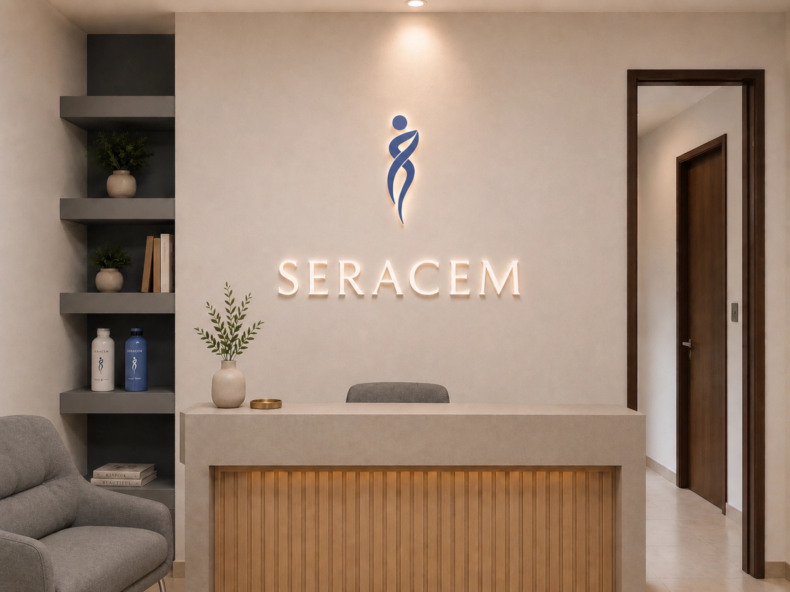

SALUD METABÓLICA Y RENAL INTEGRAL
Especialistas en el cuidado de tu salud METABÓLICA Y RENAL.


Pacientes Felices
6525+
Diagnósticos de Salúd Metabólica y Renal2000+
Pacientes tratados150+
Licensed Optometrists20+
Años de ExperienciaEspacio médico dedicado a la atención integral de la salud metabólica y renal.
Nuestro objetivo es ofrecer una visión completa de tu cuerpo, entendiendo cómo funcionan tu metabolismo y tus riñones, y cómo ambos se relacionan con tu bienestar general.
- Una valoración más allá del diagnóstico
- Tecnología aplicada a tu bienestar
- Medicina basada en evidencia, no en modas
- Un plan de atención hecho a tu medida
- Acompañamiento real
- Cuidado Integral de tu Metabolismo y tus riñones

Dra. Stefany Rodríguez Cedillo
Cédula profesional: 12254256
Cédula de especialidad: 15532007
Certificación vigente por el Consejo Mexicano de Medicina Interna
Médica especialista en Medicina Interna, formada en instituciones de alto nivel en México.
Realicé el internado médico en el Hospital Ángeles del Pedregal y posteriormente la especialidad en Medicina Interna en el Hospital Central Sur de Alta Especialidad de Petróleos Mexicanos (PEMEX), avalada por la Universidad Nacional Autónoma de México (UNAM). Cuento con certificación vigente por el Consejo Mexicano de Medicina Interna.
He complementado mi formación en el abordaje integral de la obesidad y las enfermedades metabólicas, con certificación internacional por SCOPE (Specialist Certification of Obesity Professional Education) y capacitación en el enfoque cardio-reno-metabólico (programa CONEXIÓN, Tecnológico de Monterrey).
Soy miembro activo de la Sociedad Mexicana de Obesidad. He desarrollado experiencia en el ámbito privado, brindando atención integral a pacientes con enfermedades metabólicas y crónicas.
Mi práctica médica se enfoca en la prevención, evaluación y manejo del riesgo metabólico, con especial interés en la obesidad como un factor clave en múltiples enfermedades.
Dr. José Alejandro Campos Montiel
Cédula profesional: 8547856
Cédula de especialidad: 15533571
Certificación vigente por el Consejo Mexicano de Nefrología
Médico especialista en Nefrología, con formación en instituciones de alta especialidad en México.
Realicé mis estudios de Medicina Interna y posteriormente la especialidad en Nefrología en el Hospital Central Sur de Alta Especialidad de Petróleos Mexicanos (PEMEX), en la Ciudad de México, con aval académico de la Universidad Nacional Autónoma de México (UNAM).
Cuento con certificación vigente por el Consejo Mexicano de Nefrología, lo que respalda una práctica médica basada en estándares actuales y evidencia científica. Formo parte de la Sociedad Latinoamericana de Nefrología e Hipertensión y del Colegio de Nefrólogos de México, lo que contribuye a una actualización constante en el manejo de las enfermedades renales.
Mi práctica profesional se enfoca en la atención integral de pacientes con enfermedad renal, incluyendo enfermedad renal crónica, hipertensión y nefropatía diabética, así como terapias sustitutivas como la hemodiálisis. Actualmente participo en la atención de pacientes en unidades de hemodiálisis, integrando el manejo clínico con un enfoque cercano y centrado en el paciente. Dependiendo de las necesidades de cada paciente, la atención puede complementarse mediante canalización a otras áreas de la salud, de acuerdo con la valoración médica.
NUESTROS SERVICIOS

¿Cómo Funciona?
Primera consulta
Durante tu primera visita realizamos una entrevista clínica detallada, revisamos tu historial médico, estudios previos y establecemos tus objetivos de salud. Te explicamos tu situación con claridad y sin prisa.
Seguimiento
Monitoreamos tu progreso, ajustamos tu plan de tratamiento según sea necesario y resolvemos tus dudas. El seguimiento constante es clave para lograr resultados sostenibles.
Nuestro Enfoque
Combinamos evidencia científica, tecnología de punta y una visión humana. Cada plan es único, diseñado para tu estilo de vida, necesidades y metas personales.